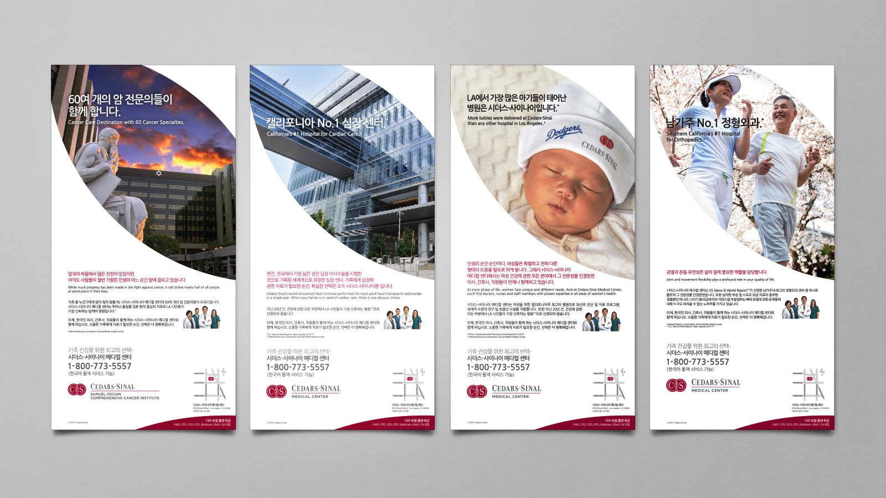
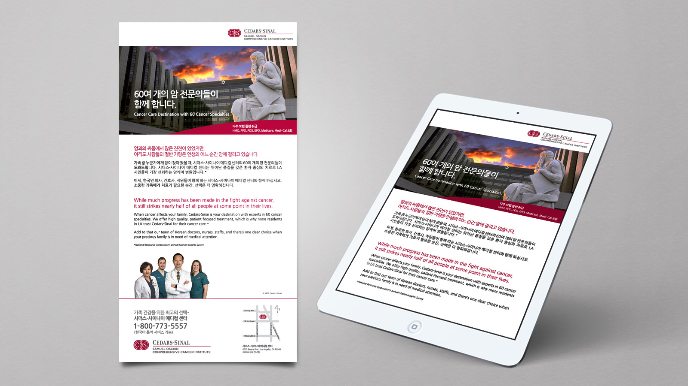
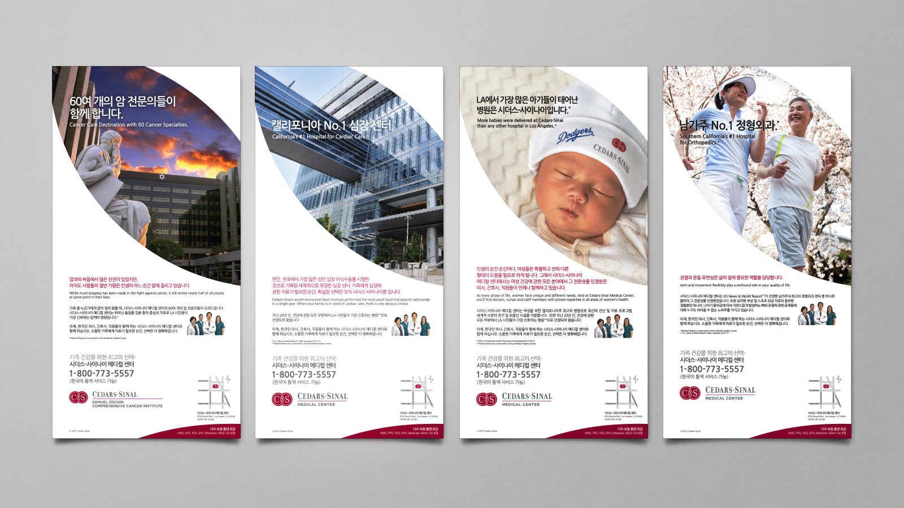
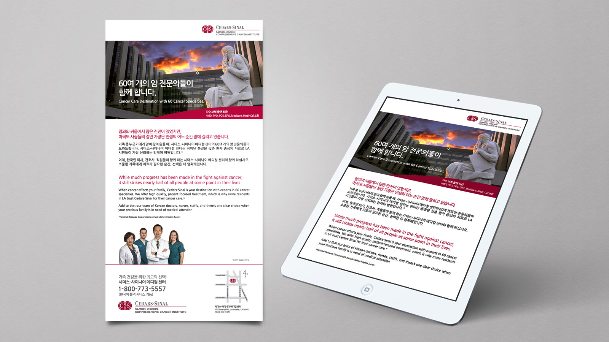

Expert Care for Life!
Cedars-Sinai Specialty Campaign

About Client
Cedars-Sinai is a nonprofit healthcare organization in Los Angeles, providing care to over 1 million people annually. With over 4,500 physicians and nurses, and 1,500 active research projects, it focuses on delivering high-quality, accessible healthcare. It serves a diverse community, with a commitment to ensuring healthcare is available to everyone who needs it.
 



Project Description
To build trust among Korean consumers in Koreatown, I created bilingual advertisements for Cedars-Sinai, highlighting their expertise in four key medical areas. The ads were published in newspapers, magazines, and email blasts in both Korean and English to target a wider audience. This campaign increased Cedars-Sinai's credibility and raised awareness among Korean consumers, encouraging them to consider Cedars-Sinai as their primary healthcare provider.
Project Detail
- + Project: Specialty Campaign
- + Client: Cedars-Sinai
- + Website: www.cedars-sinai.org
- + Medium: Newspaper / Magazine / Email Blast / TV Commercial
- + Language: Korean / English
- + Period: 2017